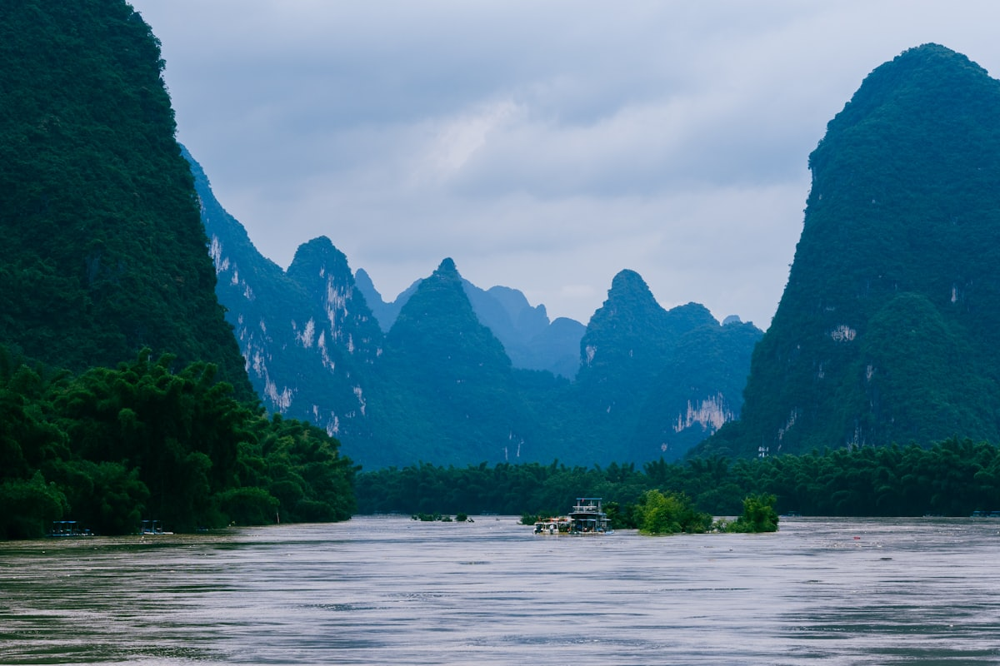
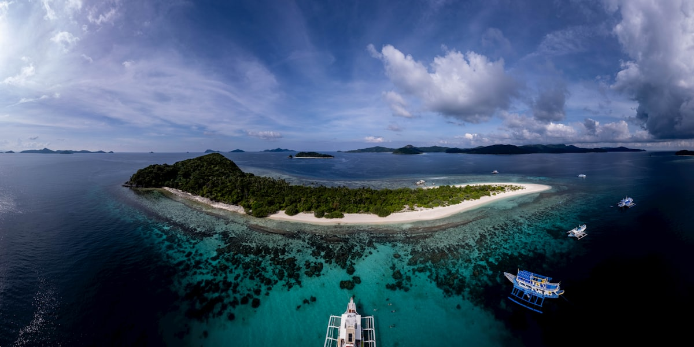
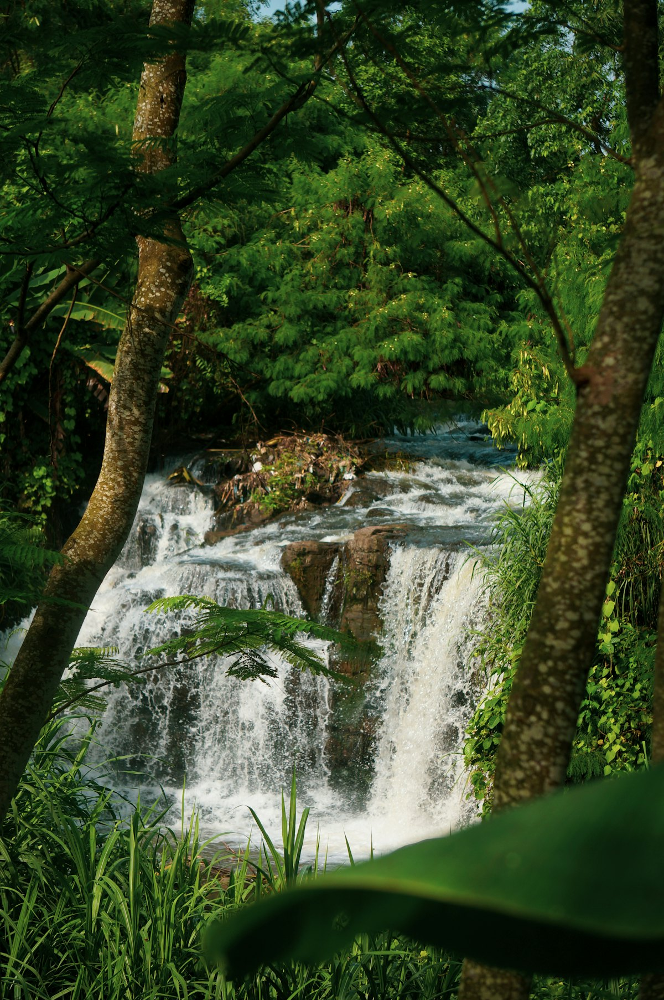
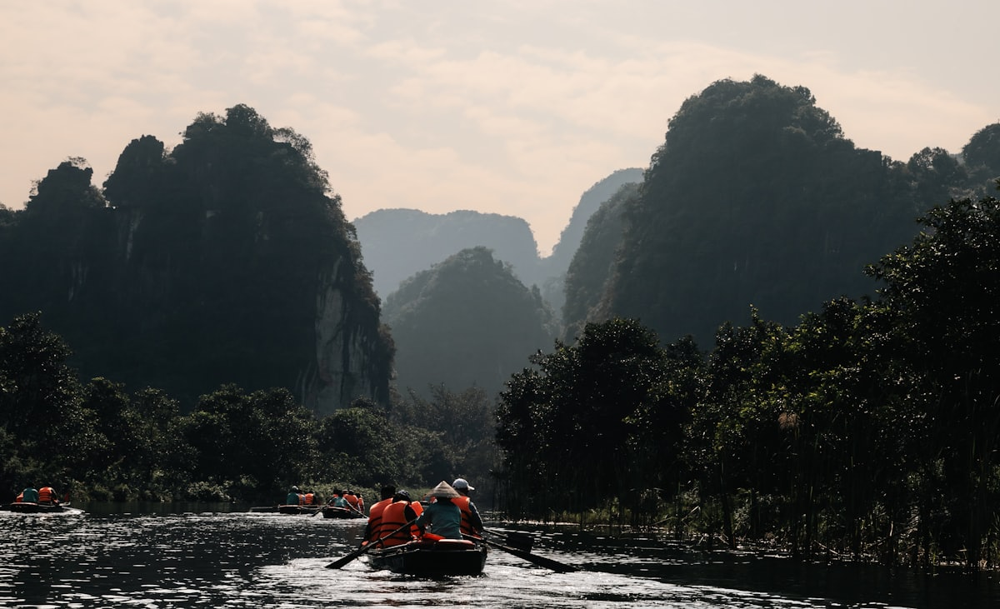
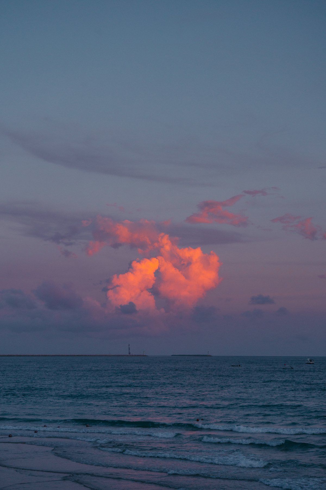

2026 · 10 天环线 · 漓江 + 阳朔 + 龙脊 + 涠洲岛 + 德天
广西 10 天全景攻略
桂林 ⇄ 阳朔 ⇄ 龙脊 ⇄ 柳州 ⇄ 北海 ⇄ 德天 · 喀斯特山水 + 海岛 + 边境
| 事项 | 结论 |
|---|---|
| 事项 | 结论 |
| 推荐方案 | 10 天 9 晚（桂北 4 + 柳州 1 + 北海涠洲岛 3 + 德天 2） |
| 返程约束 | 第 10 天从南宁/崇左高铁返程，或北海飞走 |
| 行程链 | 桂林 → 阳朔 → 龙脊 → 柳州 → 北海 → 涠洲岛 → 德天 |
| 预算（人均） | 经济 3000–4500 ／ 标准 5000–7000 ／ 舒适 8500–12000 |
| 三件提前事 | ① 涠洲岛船票提前 3–7 天订 ② 漓江游船/龙脊索道提前 1–3 天 ③ 德天瀑布确认开放政策与观光车 |
| 季节提醒 | 春秋最佳；夏季湿热多雨，冬季温暖少雨适合避寒 |
| 交通卡 | 高铁覆盖桂林/柳州/北海/南宁，涠洲岛必须乘船 |
以下为 10 天 9 晚的推荐节奏。山水段节奏舒缓，海岛与德天两段安排整天。
| 日期 | 行程 | 过夜地 | 主题 |
|---|---|---|---|
| D1 抵桂 | 入住桂林市区，象鼻山 + 两江四湖夜游 | 桂林市区 | 抵达 + 山水预热 |
| D2 | 漓江游船/竹筏（桂林→阳朔）→ 西街夜生活 | 阳朔 | 漓江山水 |
| D3 | 遇龙河竹筏 → 十里画廊骑行 → 月亮山 | 阳朔 | 阳朔慢游 |
| D4 | 阳朔 → 龙脊梯田：金坑大寨/平安寨 | 龙脊梯田 | 梯田壮景 |
| D5 | 龙脊 → 桂林 → 高铁至柳州：龙潭公园 + 螺蛳粉 | 柳州 | 螺蛳粉之城 |
| D6 | 柳州 → 北海：北海老街 + 银滩日落 | 北海 | 海滨古城 |
| D7 | 乘船上涠洲岛：鳄鱼山 + 天主教堂 | 涠洲岛 | 火山海岛 |
| D8 | 涠洲岛环岛（滴水丹屏/石螺口）→ 返北海 | 北海 | 环岛一日 |
| D9 | 北海 → 南宁 → 德天跨国瀑布 + 明仕田园 | 德天/硕龙 | 跨国瀑布 |
| D10 返程 | 上午边境田园，午后崇左/南宁高铁返程 | — | 收尾 |
以下为 10 天全程的逐小时执行时间线，可当作「当天打开照着走」的清单。标注 ※ 的可选项视体力与天气取舍。
| 时间 | 事项 |
|---|---|
| 13:00–16:00 | 抵达桂林（高铁到桂林北/桂林西，机场大巴进城约 1 小时） |
| 16:30–18:00 | 象鼻山（免费，需预约）：桂林城徽，象山水月洞 |
| 18:30–19:30 | 晚餐：桂林米粉（卤菜粉）或啤酒鱼 |
| 20:00–21:30 | 两江四湖夜游（游船参考价 190–230 元）：杉湖、榕湖、日月双塔夜景 |
| 22:00 | 回酒店休息 |
| 时间 | 事项 |
|---|---|
| 08:00–09:30 | 桂林磨盘山/竹江码头登船，或到兴坪坐竹筏（两种方案见提醒） |
| 09:30–13:30 | 漓江游船（参考价 210–300 元，约 4 小时）：杨堤、九马画山、20 元人民币背景黄布倒影 |
| 14:00–15:00 | 抵达阳朔码头，午餐 |
| 15:30–18:00 | 入住阳朔民宿，十里画廊骑行（月亮山、大榕树、聚龙潭） |
| 19:00–21:00 | 西街（免费）：洋人街逛吃，晚餐啤酒鱼（阳朔招牌） |
| 21:30 | 回民宿休息 |
| 时间 | 事项 |
|---|---|
| 08:00–10:00 | 遇龙河竹筏（参考价约 160–320 元/筏）：水厄底–万景段最经典，冲坝刺激 |
| 10:30–12:30 | 十里画廊骑行/电瓶车：月亮山、大榕树、蝴蝶泉外观 |
| 12:30–13:30 | 午餐：阳朔农家菜（啤酒鸭、田螺酿、荔浦芋扣肉） |
| 14:00–17:00 | 可选 ※ 银子岩溶洞（参考价约 70 元）或 遇龙河上游富里桥（免费） |
| 18:00–20:30 | 可选 ※ 《印象·刘三姐》（参考价 150–250 元，山水实景演出） |
| 21:00 | 回民宿休息 |
| 时间 | 事项 |
|---|---|
| 08:00–10:30 | 阳朔包车/大巴至龙脊梯田景区（约 2.5 小时） |
| 10:30–12:00 | 购票进景区（参考价约 80 元），乘索道或徒步至金坑大寨观景台 |
| 12:00–13:00 | 景区内午餐（竹筒饭、腊肉） |
| 13:30–17:00 | 金坑大寨（或平安寨）：千层天梯、西山韶乐观景台，梯田+吊脚楼全景 |
| 18:30 | 入住梯田民宿（吊脚楼），晚餐瑶族/壮族风味 |
| 21:00 | 可看星空，梯田景区光污染少 |
| 时间 | 事项 |
|---|---|
| 07:30–09:00 | 清晨看梯田云海（视天气） |
| 09:00–11:30 | 退房，乘车返回桂林（约 2.5 小时） |
| 12:30–14:00 | 桂林北乘高铁至柳州站（约 1 小时，参考价约 60 元） |
| 14:30–16:30 | 龙潭公园（免费）：喀斯特群山环抱的市民公园，风雨桥 |
| 17:00–19:00 | 柳州螺蛳粉名店打卡（参考人均 10–20 元），晚餐可选柳州牛杂/鸭脚煲 |
| 19:30–21:00 | 柳江夜景：窑埠古镇（免费）+ 百里柳江喷泉 |
| 21:30 | 回酒店 |
| 时间 | 事项 |
|---|---|
| 08:00–10:00 | 柳州乘高铁至北海站（约 2 小时，参考价约 100 元） |
| 10:30–12:30 | 北海老街（免费）：百年中西合璧骑楼，尝虾饼、糖水 |
| 12:30–13:30 | 午餐：海鲜大排档（按斤计价先问清） |
| 15:00–18:00 | 北海银滩（免费）：绵延 24 公里细白沙滩，傍晚看日落 |
| 18:30–20:00 | 晚餐：北部湾海鲜（沙虫、花蟹、濑尿虾） |
| 20:30 | 回酒店（推荐银滩/老街一带） |
| 时间 | 事项 |
|---|---|
| 08:00–09:30 | 北海国际客运港乘船至涠洲岛（快船约 60–80 分钟，船票参考价 150–240 元） |
| 09:30–11:00 | 上岛购票（参考价约 98 元），入住民宿，租电瓶车 |
| 11:30–14:00 | 鳄鱼山火山公园：火山口地貌、海蚀崖栈道（岛上必去） |
| 14:30–16:30 | 天主教堂（免费）：法国哥特式建筑；五彩滩看火山岩海岸 |
| 17:00–18:30 | 石螺口海滩看日落 |
| 19:00 | 晚餐：海岛海鲜（鲍鱼、石斑、海胆蒸蛋） |
| 时间 | 事项 |
|---|---|
| 06:30–08:00 | 可选 ※ 五彩滩日出（视潮汐与天气） |
| 08:30–11:30 | 滴水丹屏（红色岩壁滴水）→ 贝壳沙滩环岛打卡 |
| 11:30–13:00 | 午餐 + 退房，打包手信（海鸭蛋、火山岩饰品） |
| 13:30–15:00 | 乘船返回北海 |
| 16:00–18:00 | 可选 ※ 红树林景区（参考价约 60 元）或侨港风情街觅食 |
| 19:00 | 晚餐：侨港越南卷粉、糖水 |
| 时间 | 事项 |
|---|---|
| 08:00–12:00 | 北海乘高铁至南宁东（约 1.5 小时），转乘至崇左南或包车前往 |
| 12:00–13:00 | 午餐：大新县边境风味（越南春卷、烤猪） |
| 13:30–17:00 | 德天跨国瀑布（参考价约 80–115 元，含观光车）：亚洲第一跨国瀑布，与越南板约瀑布相邻，可乘竹筏近距离看 |
| 17:30–18:30 | 明仕田园（参考价约 80 元）：竹筏漂流于喀斯特田园，《花千骨》取景地 |
| 19:00 | 入住硕龙镇/德天景区酒店 |
| 时间 | 事项 |
|---|---|
| 08:00–10:00 | 上午可再逛边境市集或睡到自然醒 |
| 10:00–12:00 | 退房，乘车返回南宁东站（约 2.5–3 小时） |
| 12:30–13:30 | 南宁午餐，采购伴手礼（螺蛳粉礼盒、桂林三花酒、沙田柚） |
| 14:00–17:00 | 南宁东高铁/机场返程 |
必去（必去）/ 顺路（顺路）/ 可跳过（可跳过）。
必去
必去 必去
必去
必去
必去
顺路
顺路图片为 Unsplash 主题图（漓江、阳朔、梯田、海岛、瀑布等均为同主题示意图），用于页面配图。更多免费景点：桂林两江四湖、北海老街、明仕田园沿途田园风光。
点击左侧节点可在地图上定位；点击地图 marker 会高亮对应节点。坐标为 WGS-84 转 GCJ-02 纠偏后标注。
以下为单人、不含购物的估算；门票为旺季参考价，以现场为准。交通按高铁往返计（从华东/华南出发约 800–1500 元），省内高铁+船约 600–900 元，不同出发地浮动较大。
| 项目 | 经济（3000–4500） | 标准（5000–7000） | 舒适（8500–12000） |
|---|---|---|---|
| 往返交通 | 高铁约 800–1200 | 高铁/飞机约 1200–2000 | 飞机 + 接送约 2500–3500 |
| 省内交通 | 高铁 + 大巴约 500–600 | 含涠洲岛船票约 800–1000 | 包车/自驾约 1500–2500 |
| 住宿（9 晚） | 青旅/民宿 700–1000 | 精品民宿/连锁 1800–2700 | 度假酒店/豪华民宿 4000–6000 |
| 门票 | 基础景点约 400 | 含竹筏/船票/索道约 700 | 全含 + 演出约 1100 |
| 餐饮（10 天） | 500–700 | 1000–1400（含海鲜） | 1800–2600（海鲜大餐） |
带娃推荐：龙脊梯田住一晚看星空、涠洲岛骑电瓶车环岛、北海银滩玩沙看海；把德天（车程长）换成银滩+红树林，节奏更轻松。漓江选游船不选竹筏，安全系数更高。
10–12 月广西温暖少雨，漓江水清、梯田金黄（10 月），酒店便宜 30–50%；注意涠洲岛冬季风大浪高偶有停航，关注船班公告。春节前是广西旅游的又一个高峰。
| 方式 | 时长 | 参考价 | 备注 |
|---|---|---|---|
| 高铁（推荐） | 视出发地 3–9h | 二等座 250–1200 元 | 桂林/南宁/柳州为主要枢纽 |
| 飞机 | 视出发地 1–3h | 400–1800 元 | 桂林两江/南宁吴圩/北海福成三场 |
| 自驾 | 视出发地 | 高速 + 油费 | 桂北山路多，雨季谨慎驾驶 |
| 区域 | 价格/晚 | 优点 | 短板 |
|---|---|---|---|
| 桂林市中心 | 快捷 200–350 / 星级 500–900 | 近象鼻山、两江四湖 | 旺季房源紧 |
| 阳朔西街/遇龙河 | 民宿 250–600 | 田园景观、特色民宿多 | 节假日溢价高 |
| 龙脊梯田 | 吊脚楼民宿 250–500 | 推窗即梯田，看星空 | 设施较简单、行李难扛 |
| 北海银滩/老街 | 快捷 200–400 | 近海滩与老街 | 老房隔音一般 |
| 涠洲岛 | 海景民宿 300–700 | 看海看日落，海鲜方便 | 电力有限、旺季价高 |